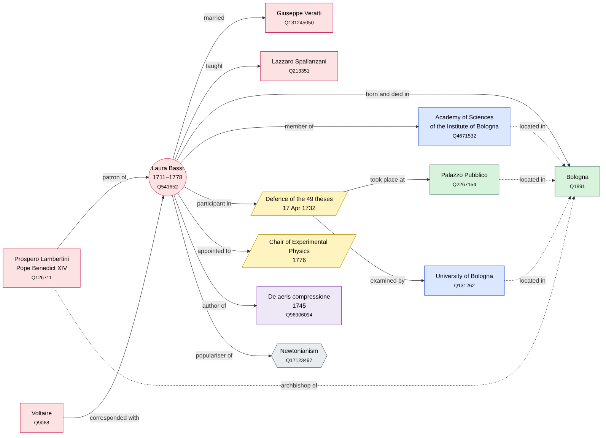
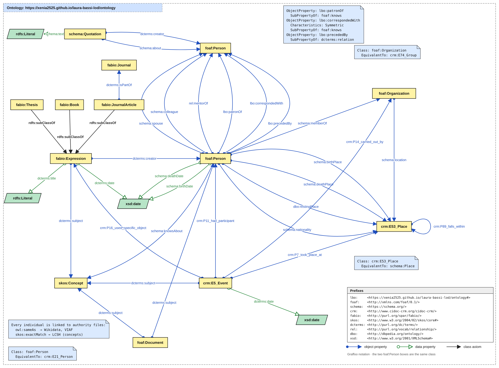

Part 1
Study of
the domain
01 Idea
The project starts from the English Wikipedia page Laura Bassi. Laura Bassi was an Italian physicist and, in 1732, the first woman to receive a university chair in Europe, at the University of Bologna.
Her life is made of clear relations: a patron who became pope, a husband who worked with her, students, correspondents, academies and dated appointments. The question behind the project is: how did a woman build a scientific career in eighteenth-century Bologna?
02 Entities
Thirteen entities mentioned in the page were selected, covering people, places, organisations, events, a work and a concept. Each one is linked to an authority file (Wikidata and VIAF).
 Laura BassiPerson
Laura BassiPerson
Topic of the page, 1711–1778Wikidata Q541652 VIAF 42647435 Prospero Lambertini (Pope Benedict XIV)Person
Prospero Lambertini (Pope Benedict XIV)Person
Her patronWikidata Q126711 VIAF 76327169- Giuseppe VerattiPerson
Her husbandWikidata Q131245050 VIAF 275491168  Lazzaro SpallanzaniPerson
Lazzaro SpallanzaniPerson
Her studentWikidata Q213351 VIAF 7405452 VoltairePerson
VoltairePerson
Her correspondentWikidata Q9068 VIAF 36925746 BolognaPlace
BolognaPlace
Where she was born, worked and diedWikidata Q1891 VIAF 144875967 Palazzo Pubblico (Palazzo d'Accursio)Place
Palazzo Pubblico (Palazzo d'Accursio)Place
Where she defended her thesesWikidata Q2267154 University of BolognaOrganisation
University of BolognaOrganisation
Doctorate and professorshipWikidata Q131262 VIAF 155886025 Academy of Sciences of the Institute of BolognaOrganisation
Academy of Sciences of the Institute of BolognaOrganisation
First woman member, 1732Wikidata Q4671532 VIAF 127702994- Public defence of the 49 thesesEvent
17 April 1732Local URI - Chair of Experimental PhysicsEvent
1776Local URI - De aeris compressioneWork
Treatise, 1745Wikidata Q96906094 - NewtonianismConcept
She was its main populariser in ItalyWikidata Q17123497
Full table: docs/entities.csv. Images: Wikimedia Commons.
Part 2
Knowledge
organisation
03 Theoretical model
The theoretical model shows how the 13 entities are related to Laura Bassi. Each node has its Wikidata identifier. Dashed lines are indirect relations, not written in the page (for example, that the university is located in Bologna).

04 Conceptual model
The theoretical model is then written as an ontology, reusing existing vocabularies. For three relations no existing term was found, so three new properties were created: patronOf, correspondedWith and precededBy.
- CIDOC CRMEvents and placescrm:E5_Event, crm:E53_Place, P11_had_participant, P7_took_place_at
- FOAF, schema.orgPeople and organisationsfoaf:Person, foaf:Organization, schema:spouse, schema:memberOf, schema:birthPlace
- FaBiOWorksfabio:Expression, fabio:Thesis, fabio:Book
- SKOSConceptsskos:Concept
- DC TermsGeneral metadatadcterms:creator, dcterms:date, dcterms:subject
- lbo: (new)Missing relationslbo:patronOf, lbo:correspondedWith, lbo:precededBy

Part 3
Knowledge
representation
05 XML/TEI
The text of the Wikipedia page is encoded in TEI. The entities are marked in the text (persName, placeName, orgName, date, title, term) and described in dedicated lists: listPerson, listOrg, listPlace, listEvent, listBibl and listRelation. Each one is linked to its authority files (Wikidata, VIAF). Voltaire's quotation is encoded with q.
The text, annotated
<p><rs type="event" ref="#academy_election_1732">On
<date when="1732-03-20">20 March 1732</date>, aged twenty,
Bassi became the first woman elected to the
<orgName ref="#academy_sciences_bologna">Academy of Sciences
of the Institute of Bologna</orgName></rs>. …</p>The description of a person
<person xml:id="laura_bassi" sex="F" sameAs="http://www.wikidata.org/entity/Q541652">
<persName type="full"><forename>Laura</forename> <forename>Maria</forename> <forename>Caterina</forename> <surname>Bassi</surname> <surname>Veratti</surname></persName>
<persName type="short">Laura Bassi</persName>
<birth when="1711-10-29"><placeName ref="#bologna">Bologna</placeName></birth>
<death when="1778-02-20"><placeName ref="#bologna">Bologna</placeName></death>
<occupation>physicist</occupation>
<occupation>university professor</occupation>
<idno type="VIAF">https://viaf.org/viaf/42647435</idno>
<idno type="LC">http://id.loc.gov/authorities/names/n85824830</idno>
</person>Relations
<relation name="spouse" ref="https://schema.org/spouse"
mutual="#laura_bassi #giuseppe_veratti"/>
<relation name="patronOf" ref="https://xenia2525.github.io/laura-bassi-lod/ontology#patronOf"
active="#benedict_xiv" passive="#laura_bassi"/>
<relation name="tookPlaceAt" ref="http://www.cidoc-crm.org/cidoc-crm/P7_took_place_at"
active="#thesis_defence_1732" passive="#sala_anziani"/>Full document: data/laura_bassi.xml
06 XML to HTML
An XSLT stylesheet transforms the TEI into HTML. It is run with a short Python script (lxml). In the HTML, every annotated entity becomes a link to its description.
tei2html.xsl (excerpt)
<xsl:template match="tei:body/tei:div/tei:head">
<h2><xsl:apply-templates/></h2>
</xsl:template>
<xsl:template match="tei:div/tei:div/tei:head">
<h3><xsl:apply-templates/></h3>
</xsl:template>
<xsl:template match="tei:p"><p><xsl:apply-templates/></p></xsl:template>07 XML/TEI to RDF
A Python script (rdflib) reads the TEI and creates the RDF dataset, using the classes and properties of the conceptual model. Each relation in listRelation becomes a triple. The dataset is saved in Turtle.
laura_bassi.ttl (excerpt)
lb:laura_bassi a foaf:Person ;
rdfs:label "Laura Bassi"@en ;
schema:birthDate "1711-10-29"^^xsd:date ;
schema:birthPlace lb:bologna ;
schema:spouse lb:giuseppe_veratti ;
rel:mentorOf lb:lazzaro_spallanzani ;
lbo:correspondedWith lb:voltaire ;
schema:memberOf lb:academy_sciences_bologna ;
schema:knowsAbout lb:newtonianism ;
owl:sameAs <http://www.wikidata.org/entity/Q541652>,
<https://viaf.org/viaf/42647435> .
lb:thesis_defence_1732 a crm:E5_Event ;
rdfs:label "Public defence of the forty-nine philosophical theses"@en ;
dcterms:date "1732-04-17"^^xsd:date ;
crm:P11_had_participant lb:laura_bassi ;
crm:P14_carried_out_by lb:unibo ;
crm:P7_took_place_at lb:sala_anziani .All the files
Files
- entities.csvdocs/The entities and their Wikidata and VIAF identifiers
- theoretical_model.pngmodels/Theoretical model (and description)
- conceptual_model_graffoo.svgmodels/Conceptual model in Graffoo
- ontology.ttlmodels/The ontology
- laura_bassi.xmldata/XML/TEI document
- tei2html.xslscripts/XML to HTML (XSLT), run by tei2html.py
- laura_bassi.htmloutput/HTML output
- tei2rdf.pyscripts/XML/TEI to RDF (Python, rdflib)
- laura_bassi.ttldata/RDF dataset (Turtle)